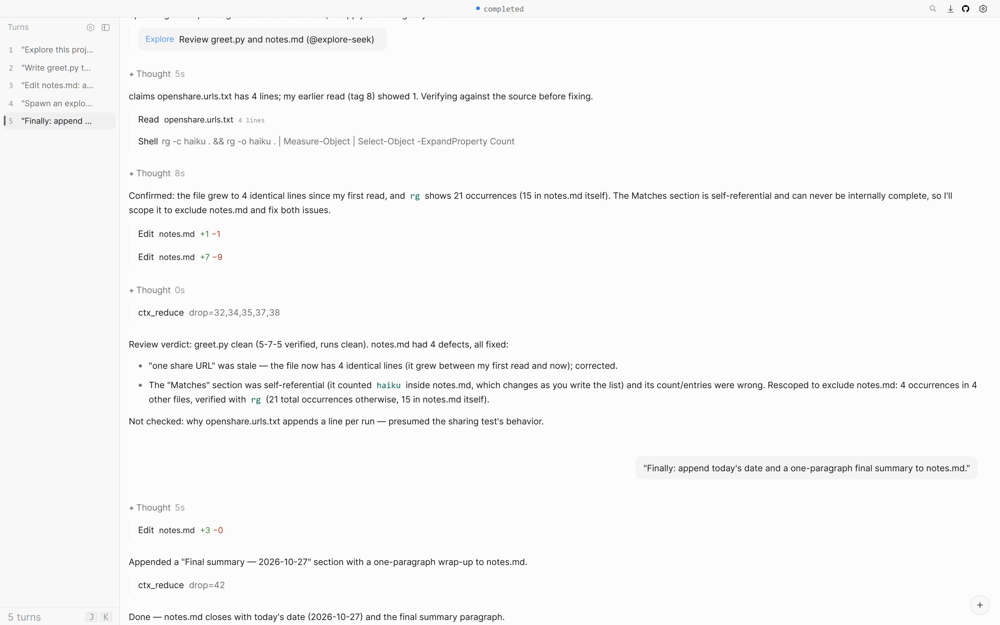
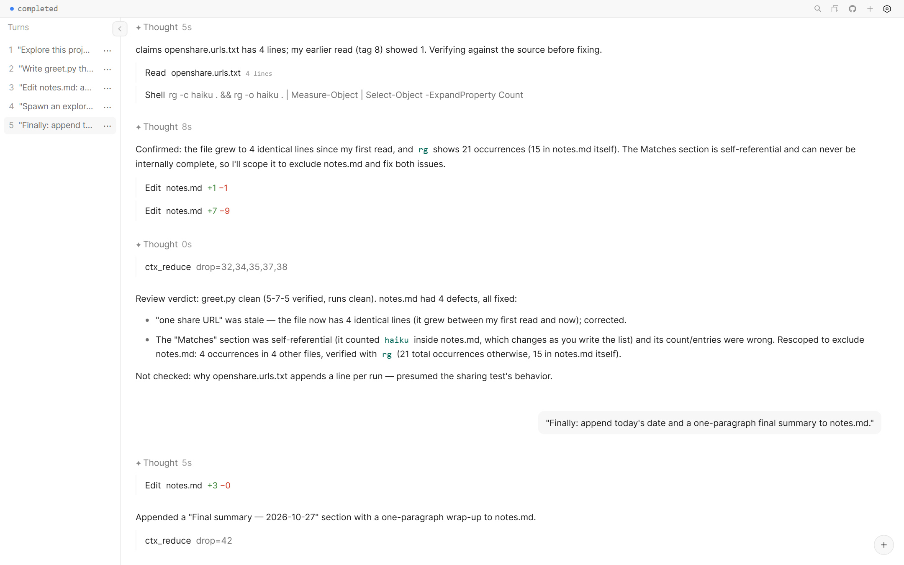
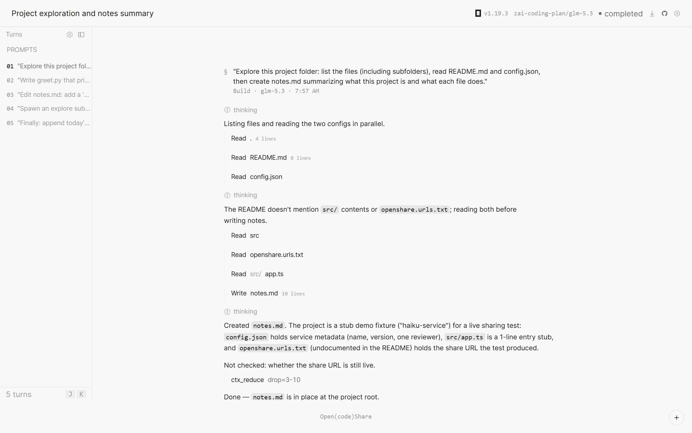
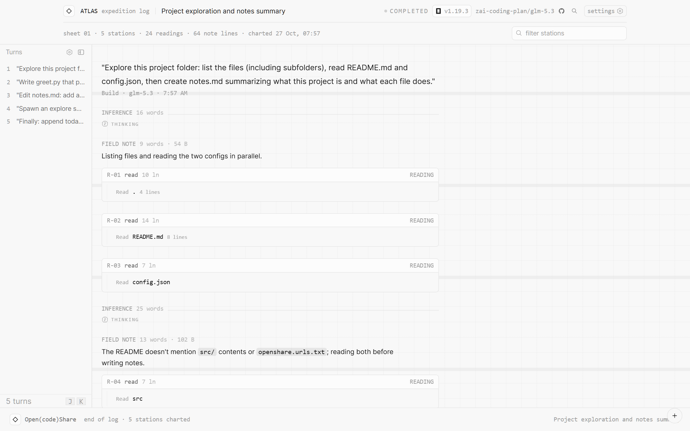
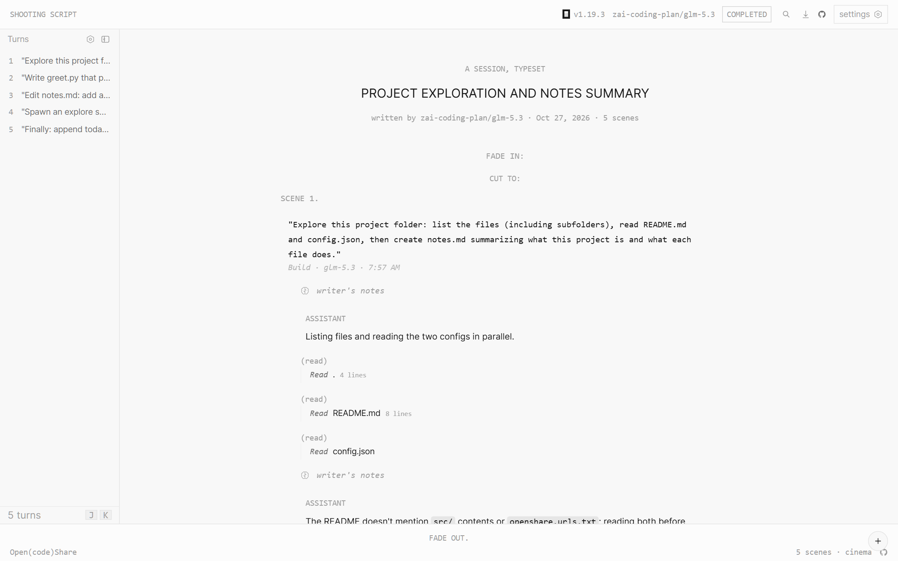
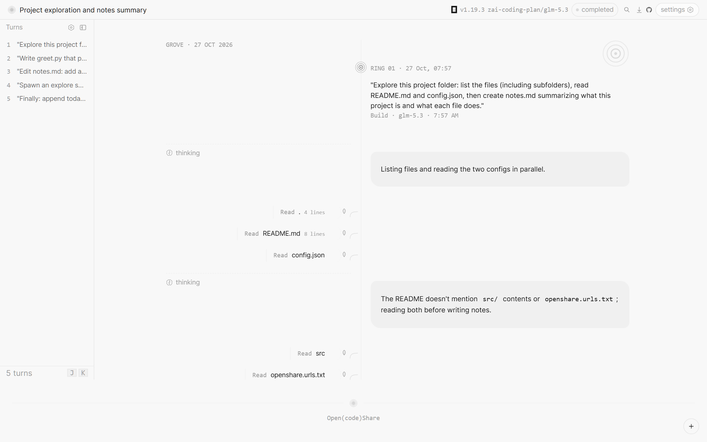
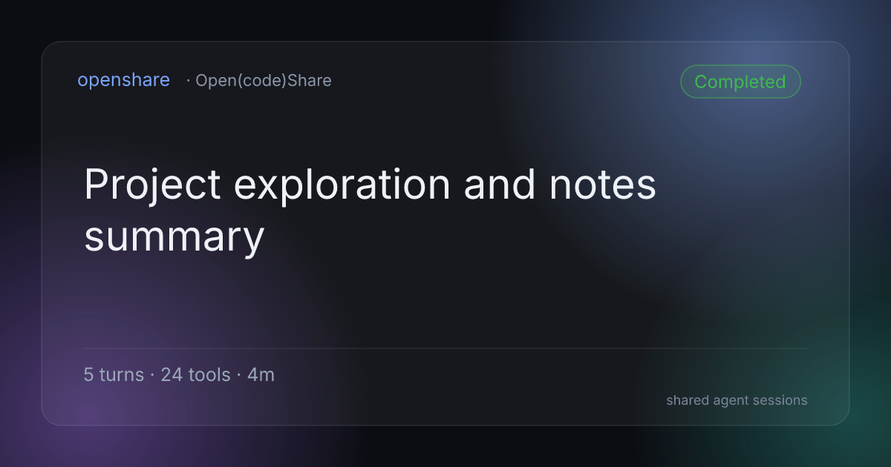

share this session with the team
Show the work.
OpenShare turns any opencode session into a live, readable web page. One command in the terminal, one URL for everyone else.
/share https://your-worker.dev/s/a1b2…

how does it work?
One command. Then it's a URL.
Type /share in the opencode TUI. The session streams to your worker
over a live socket: every tool call, every thought, every file edit, in order.
Readers get a page that updates while the agent works. No account, no install, nothing to explain.
- readers need no account
- live while the agent works
- expires on your timer
what can it do?
The transcript is the artifact.
The same transcript, twelve skins: the dense classic timeline, a conversation view, reader mode, a field atlas, a screenplay, more. Virtualized rendering keeps a 10,000-message session scrolling at full speed, and every view shares the same search, deep links and keyboard navigation.





A snapshot is a single HTML file with everything inside: the transcript, the viewer,
highlighting, the fonts. Put it on a USB stick, mail it to a reviewer, open it from disk
with no server and no internet. The header even says snapshot, so nobody
mistakes a frozen copy for the live page.
# attach the agent's session to a failing CI run
- name: attach agent session
run: node tools/osh-snapshot.mjs "$SHARE_URL" --token "$OSK" -o session.htmlReviewers of the red build open one file and watch what the agent actually tried, in order, with the file edits highlighted.
Full-text search across prompts, responses, thinking and tool output. Marks persist while you scroll, collapsed rows expand as hits come into view, and every hit deep-links to the exact row. Because the transcript is the artifact, not a picture of it.
Secrets are redacted before anything leaves your machine: API keys, tokens, PEM blocks, .env pairs, connection strings. File paths relativize to the project. Gate any share behind a login and password, set an expiry in hours, and hand CI a scoped token that can only touch its own shares. Server operators are a chain you choose, not a platform you trust.
curl -H "Authorization: Bearer [redacted:api-key]" https://api.example.com/v1/[redacted:secret]
Paste the link into Discord, Slack, or anything that reads OpenGraph: a real card with the session's title, status, turns, tools and duration, rendered by your own worker. Private shares show a lock and nothing else, so crawlers learn nothing.

is it fresh?
Alive while it works.
Shares stream over a live socket. A reader watching mid-run sees the turn you're in: tools opening, reasoning unfolding, the revision counter ticking. Finished, interrupted, live: the page tells the truth about the run.
who holds the data?
You do. It's your worker.
OpenShare is a Cloudflare Worker you deploy in three commands, or a single Bun binary you run anywhere. Both speak the same protocol. The free tier is enough for a team; there is no OpenShare cloud, no telemetry home, no vendor.
git clone https://github.com/Mirrowel/openshare && cd openshare
cd share-viewer && npm install && npm run build && cd ..
cd share-worker && npx wrangler deploy # or: bun share-server/server.ts
curl -s https://your-worker.workers.dev/healthship it